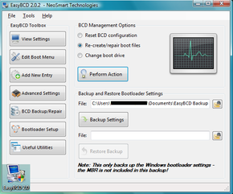

Ubuntu entfernen
Achtung!
Bei Änderungen an Partitionen besteht immer die Gefahr des Datenverlustes. Daher sollte man vorher immer Backups der wichtigen Daten erstellen!
Dieser Artikel beschreibt das Vorgehen, wenn man Ubuntu wieder von seinem Rechner entfernen will (oder muss) und das andere Betriebssystem erhalten bleiben soll.
Ausgehend von einer Installation mit MBR gelten die folgenden Schritte als Anleitung!
Experten-Info:
Diese Anleitung ist auf einem Rechner mit einem EFI Bootmanagement nicht anwendbar - dazu gibt es eine separate Beschreibung!
Die prinzipielle Vorgehensweise:
Backup wichtiger Daten
Von der Windows-Installations-CD booten (DOS-Diskette)
Reparaturkonsole benutzen, um den Linux-Bootmanager zu entfernen
Partitionen neu strukturieren
Man sollte bei jedem Schritt vorab eine Abklärung mit den realen Gegebenheiten durchführen.
Backups¶
Hierzu muss man nicht viel sagen. Backups wichtiger Daten sollten regelmäßig erstellt und unabhängig vom Rechner gelagert werden. Backups auf dem selben Computer zu speichern von dem sie stammen, bieten nur unzureichende Sicherheit! Am besten brennt man die Daten auf CD/DVD oder lagert sie auf einer externen Festplatte aus.
Welche Installations-CD, welches Passwort?¶
Man benötigt eine Windows-CD (ab Windows 2000) oder die Super Grub Disc, um den Bootsektor wiederherzustellen und so die Bootmanager Lilo bzw. GRUB (Ubuntu verwendet GRUB) zu entfernen. Die Super Grub_2 Disc ist hierfür nicht geeignet, man kann die alte Super Grub Disk (ohne "2") aber noch herunterladen unter http://www.supergrubdisk.org/ -> Other Stuff -> Old Super Grub Disk
Die Windows 2000-CD hat den großen Vorteil, dass sie es erlaubt, ohne Administratorpasswort eine Reparaturkonsole zu öffnen. In der Wiederherstellungskonsole der Windows XP-CD wird man im Gegensatz dazu nach dem Administratorpasswort gefragt, bevor man in die Konsole gelangt. Mit Administratorpasswort ist in der Tat das Passwort des Windowsaccounts "Administrator" gemeint. Es ist nicht möglich, sich als User mit Administratorrechten einzuloggen.
Ab Windows Vista ist das Entfernen des Bootloaders und Wiederherstellung des Windows-Bootloaders mit dem Hilfsprogramm "Bootrec.exe" in der Windows-Wiederherstellungsumgebung möglich.
Die Super Grub Disk hat den Vorteil, dass sie Open Source ist und kleiner als 5 MB groß ist. Mit einem Klick wird die Wiederherstellung vollzogen.
Windows Reparaturkonsole / Wiederherstellungskonsole¶
Windows XP¶
Bei Windows XP bootet man den Rechner mit der Installations-CD, danach
wartet man einfach bis zur ersten Abfrage (nicht F2 für "automatische Systemwiederherstellung" drücken). Bei der ersten Abfrage drückt man R und wartet, bis die Wiederherstellungskonsole gestartet ist; oder
drückt man beim ersten "blauen Bildschirm" F10 , um direkt zur Wiederherstellungskonsole zu wechseln. (Quelle siehe Links)
Jetzt sollte ein Konsolenbildschirm erscheinen mit der Frage, an welcher Windowsinstallation man sich anmelden möchte. Nun einfach die Zahl vor der wiederherzustellenden Installation eingeben und mit ⏎ bestätigen. Jetzt sollte man das Administratorpasswort parat haben. Einfach eingeben und wieder mit ⏎ bestätigen. Anschließend die folgenden Befehle ausführen, wobei X: durch den Laufwerksbuchstaben zu ersetzen ist, das die wiederherzustellende Windowsinstallation enthält.
Befehle in der Reparatur- / Wiederherstellungskonsole¶
Dieser Befehl richtet den MasterBootRecord (MBR) neu ein:
fixmbr
Dieser Befehl richtet den Startsektor (auch Bootsektor genannt) der Systempartition neu ein. Im Allgemeinen befindet sich diese auf dem Windows-Laufwerk C:
fixboot c:
fixboot ohne Angabe eines Laufwerks schreibt einen neuen Bootsektor auf dem Laufwerk bei dem man sich beim Aufruf der Reparaturkonsole angemeldet hat.
Die Programme fragen in ziemlich beängstigendem Ton, ob man sich wirklich ganz sicher ist, da eventuell alle Daten auf der Festplatte zerstört werden können. In der Tat ist diese ganze Aktion nicht ganz ohne Risiko (siehe Backups), normalerweise sollte es jedoch keine Schwierigkeiten geben.
Administratorpasswort unter Windows XP eingeben¶
Unter "Start -> Systemsteuerung -> Verwaltung -> Computerverwaltung" findet man den Eintrag "Lokale Benutzer und Gruppen". Sollte das Fenster "Systemsteuerung" keinen Eintrag "Verwaltung" aufweisen, klickt man in der linken Fensterhälfte auf "Zur klassischen Ansicht wechseln". Ein Unterpunkt hiervon ist "Benutzer". Hier findet man den Account "Administrator". (Zugriff auf das Administrator-Konto hat man bei XP-Home nur im abgesicherten Modus unter Start/Systemsteuerung/Benutzerkonten.) Diesen mit der linken Maustaste anwählen und den Eintrag "Kennwort festlegen" öffnen. Jetzt sollte eine Warnung erscheinen, diese kann problemlos mit "Fortsetzen" beendet werden. In dem darauffolgenden Dialog vergibt man nun ein Kennwort und wiederholt dieses. Dann mit "Ok" bestätigen und den Rechner mit der eingelegten Windows XP-CD neustarten.
Windows Vista und Windows 7¶
Als erstes werden Linux-Partitionen unter Windows in der Datenträgerverwaltung gelöscht.
Bevor das Hilfsprogramm Bootrec.exe zur Wiederherstellung des Windows-Bootloaders ausgeführt werden kann, muss die Windows-Wiederherstellungsumgebung gestartet werden. Dazu geht man folgendermaßen vor:
Windows-Installationsdatenträger in das CD- oder DVD-Laufwerk einlegen und damit booten
Bei Aufforderung eine Taste drücken
Sprache, Zeit, Währung sowie eine Tastatur oder eine Eingabemethode wählen und auf "Weiter" klicken
"Computer reparieren" anwählen
Im Dialogfeld Systemwiederherstellungsoptionen auf "Eingabeaufforderung" klicken
Befehle in der Reparatur- / Wiederherstellungskonsole¶
Dieser Befehl listet die Befehle in der Reparatur- / Wiederherstellungskonsole auf:
bootrec
Dieser Befehl listet die installierten Betriebsysteme auf:
bootrec /ScanOs
Dieser Befehl richtet den MasterBootRecord (MBR) neu ein:
bootrec /fixmbr
Dieser Befehl richtet den Startsektor (auch Bootsektor genannt) der Systempartition neu ein:
bootrec /fixboot
Dieser Befehl durchsucht alle Datenträger nach Installationen, die mit Windows Vista bzw. Windows 7 kompatibel sind. Außerdem kann man über diese Option die Installationen auswählen, die dem Speicher für Startkonfigurationsdaten hinzugefügt werden sollen. Diese Option wird verwendet, wenn die Startkonfigurationsdaten neu erstellt werden müssen:
bootrec /RebuildBcd
System neu starten, Fertig!
Hier gibt es mehr Informationen: Microsoft Support Seite  .
.
Wiederherstellen des MBR ohne Windows CD¶
Achtung!
Eine fehlerhafte Verwendung der nachfolgend beschriebenen Anwendungen kann möglicherweise zu einem Totalverlust der Daten auf der Festplatte führen! Es wird dringend angeraten, die wichtigsten Daten in einem Backup zu sichern.
Wiederherstellen mit der Anwendung MbrFix¶
Hat man keine Windows-CD mit Reparaturkonsole zur Hand, hilft das Programm MbrFix.exe weiter (Download 
 , Anleitung ). Man installiert die .exe in Windows und öffnet dann unter Windows ein Terminalfenster durch die Eingabe von cmd.exe. Folgendes muss eingegeben werden:
, Anleitung ). Man installiert die .exe in Windows und öffnet dann unter Windows ein Terminalfenster durch die Eingabe von cmd.exe. Folgendes muss eingegeben werden:
MbrFix /drive <num> fixmbr
wobei für <num> die Laufwerksnummer (Zählung beginnt mit Null) anzugeben ist. Falls Windows Vista verwendet wird, lautet der Befehl:
MbrFix /drive <num> fixmbr /vista
Wiederherstellen mit der Super Grub Disc¶
Eine weitere Möglichkeit, den ursprünglichen MBR von Windows wiederherzustellen, bietet die sogenannte Super Grub Disk.
Eigentlich wurde diese Disk konzipiert, um den Linux-Bootloader GRUB auf den MBR zu schreiben bzw. um die zu bootende Partition selber auszuwählen. Die Software eignet sich allerdings auch hervorragend, um einen bestehenden GRUB zu entfernen und den ursprünglichen, eventuell von Microsoft bereitgestellten Bootloader zu reaktivieren. Die Super Grub_2 Disc ist hierfür nicht geeignet, man kann die alte Super Grub Disk (ohne "2") aber noch herunterladen unter http://www.supergrubdisk.org/ -> Other Stuff -> Old Super Grub Disk
Auf der Homepage findet man ein sehr ausführliches Wiki, wo man alles nachlesen kann und ein kleines ISO-Image, welches man am besten auf eine CD brennt. Ist im BIOS das Booten vom DVD- bzw. CD-ROM Laufwerk aktiviert, startet das Programm und man kann mit einem ENTER-Klick die ganze Sache wiederherstellen.
Wiederherstellen unter VISTA und WINDOWS 7¶
Um den MBR für Windows VISTA bzw. Windows 7 wieder herzustellen, ist die Windows-Anwendung EasyBCD oder ein vergleichbares Tool anzuwenden, das auf die speziellen Gegebenheiten des Bootmanager bcdedit abgestimmt ist. Die Anwendung EasyBCD hat einen eigenen Menüpunkt ("BCD Backup/Repair") zum Wiederherstellen des MBR.
Dieses Tool berücksichtig auf welcher Partition das Windows installiert ist bzw. wo ein Recovery abgelegt wurde.
Auf der Homepage  findet man eine kurze Beschreibung und den EasyBCD Download.
findet man eine kurze Beschreibung und den EasyBCD Download.

Die Anwendung wird wie unter Windows üblich, mit Doppelklick auf die exe-Datei (oder unter Berücksichtigung von Administrator-Rechten im Terminal) installiert. Nach dem Start der Anwendung wird der entsprechende Menüpunkt "BCD Backup/Repair" aufgerufen. Bei den
BCD Management Optionen
(siehe Abbildung) wird der zweite Button
Re-create/repair boot files
ausgewählt und mit "Perform Action" (Anwendung ausführen) der MBR neu geschrieben. Bei mehr als einer Festplatte wird zusätzlich noch die relevante HDD abgefragt.
Nach der Reparatur / Wiederherstellung des MBR und einem Reboot kann diese Anwendung wieder über die Systemsteuerung problemlos entfernt werden.
Neustart ohne Linux¶
Der Rechner kann jetzt einfach per Reset neu gestartet werden. Das Boot-Menü sollte nun nicht mehr angezeigt werden, da der MBR ja wieder mit dem Windows-Bootmanager überschrieben wurde.
Möchte man nun auch wieder den Speicherplatz - den Linux nach wie vor belegt - unter Windows nutzen, so können die Linux-Partitionen - auch nachträglich - gelöscht werden. Dazu öffnet man
"Systemsteuerung -> Computerverwaltung -> Datenträgerverwaltung"
und löscht dort die Linux-Partitionen. Der nun freie Speicher kann beliebig in neue Partitionen aufgeteilt und formatiert werden. Bei Bedarf kann mit G-Parted oder kommerziellen Programmen wie Acronis Disk Director und Partition Magic der freie Speicher auch bestehenden Windows-Partitionen zugeordnet werden.
MBR mit DOS-Diskette wiederherstellen¶
Es gibt auch die Möglichkeit, den MBR mit Hilfe einer DOS-Bootdiskette und des Programms fdisk wiederherzustellen.
Dazu von einer solchen Diskette booten und den Befehl
fdisk /mbr
eingeben.
Sollte nur ein Windows XP zur Verfügung stehen, um die Bootdiskette zu erstellen, so wird kein fdisk auf diese kopiert. In diesem Fall kann XFDISK genutzt werden. Das .zip-Archiv herunterladen, entpacken und zusätzlich auf die Diskette kopieren.
Achtung!
Diese Variante wurde nur mit Windows XP getestet. Ältere Windows Versionen sollten ebenfalls keine Probleme bereiten. Ein solches Vorgehen unter Windows Vista und neuer führt möglicherweise nicht zum Erfolg oder richtet sogar Schaden an!
Der Befehl lautet dann:
xfdisk /MBR
Linux Partitionen sichern und in NTFS oder FAT32 rückkonvertieren¶
Falls noch Linux-Partitionen (inklusive der Swap-Partition) vorhanden sein sollten, können diese unter Windows in ein kompatibles Dateisystem wie beispielsweise NTFS konvertiert werden, wobei dabei allerdings sämtliche Dateien auf der Partition verloren gehen.
Möchte man die Daten von einem Ext2 oder Ext3 System sicherstellen, kann man diese Linux-Partitionen mit der Freeware EXT2 IFS unter Windows lesen, beschreiben und gegebenenfalls archivieren, bevor man die Partitionen löscht bzw. umwandelt.
Gibt man in der Windows-Eingabeaufforderung
diskmgmt.msc
ein, öffnet sich die Datenträgerverwaltung, wo man nun Linux-Partitionen und Swap in NTFS oder FAT32 rückkonvertieren kann.
- Erstellt mit Inyoka
-
 2004 – 2017 ubuntuusers.de • Einige Rechte vorbehalten
2004 – 2017 ubuntuusers.de • Einige Rechte vorbehalten
Lizenz • Kontakt • Datenschutz • Impressum • Serverstatus -
Serverhousing gespendet von